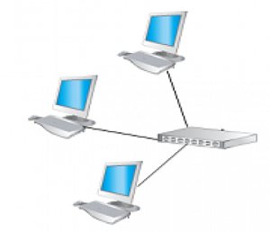
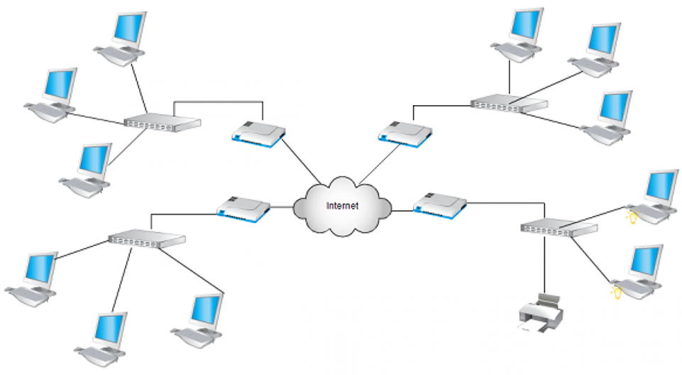
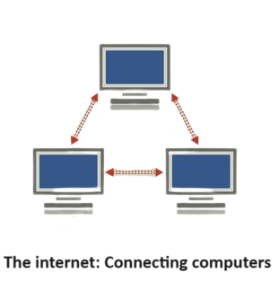
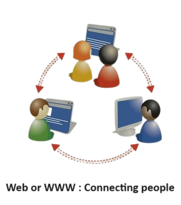
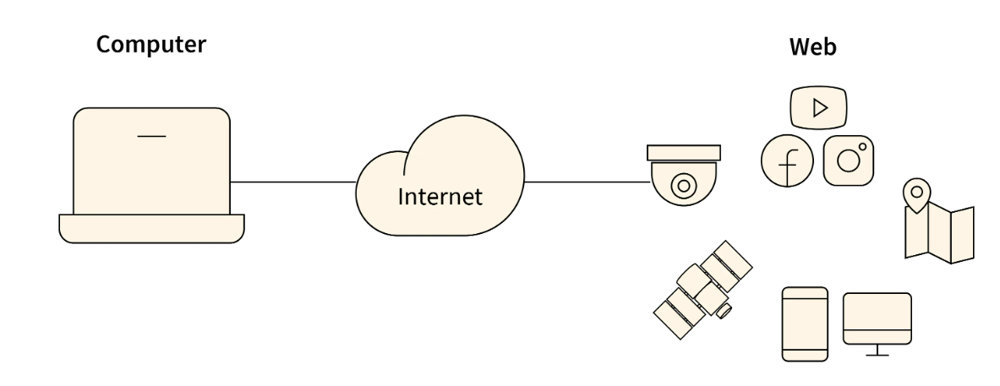

The different between Network and Internet:
| Network : | Internet : |
|---|---|
|  |  |
| When two or more computers are connected or linked with each other by using wired cables or wireless networks to share their information or data between them is known as Network. | The Internet can be described as "the network of networks", Internet is a global network that connects billions of computers with each other across the world . |
| The coverage of network is limited in comparison of internet. | The coverage of internet is large geographical area. |
| Through network, hundreds or a few thousands of computer system can linked simultaneously. | While through internet, millions of computer system can linked simultaneously. |
World Wide Web, which is also known as a Web, is a collection of websites or web pages stored in web servers and connected to local computers through the internet. These websites contain text pages, digital images, audios, videos, etc. Users can access the content of these sites from any part of the world over the internet using their devices such as computers, laptops, cell phones, etc. The WWW, along with internet, enables the retrieval and display of text and media to your device.
In 1989, it is a project created, by Timothy Berner Lee. (His short name is Tim Berner’s Lee)
The web, or www, serves as a communication platform for users to acquire and exchange information across the internet. Unlike in a book, where we move from one page to another sequentially, on the World Wide Web(WWW), we follow a web of hypertext links to visit a web page and then use that web page to move to other desired web pages. To access the internet, you must have a browser installed on your computer. For example, web browsers such as Google Chrome, Mozilla Firefox, Microsoft Edge, and so on allow you to access the internet.
|  |  |
|  | |
A web page is a single hypertext document on the World Wide Web. Web pages are delivered by a web server to the user and displayed in a web browser. It is commonly written in HTML (hypertext markup language) viewed in an Internet browser. A web page can be accessed by entering a URL (uniform resource locator) address into a browser's address bar. A web page may contain text, graphics, and hyperlinks to other web pages and files.
A website is a collection of web pages and related content that is identified by a common domain name and published on at least one web server. Here, the first page of a website is called home page which file name is index.html. The websites start with a home page, which is followed by some navigation page that is linked by the Hyperlinking between the web pages.
All the websites that are accessible publicly come under the World Wide Web. To make your website available to every person in the world, it must be stored or hosted on Web Server it can be identified by a common domain name, for example - google.com, youtube.com, bnultrasoft.com etc.
In computer science, the terms “client” and “server” refer to two separate but related concepts. A client is a program that makes requests to a server. A server is a program that fulfills those requests.
Client : Clients are user's computer or (we can say end-user device such as desktop computers, laptops and smartphones) that connects to the server through internet in order to access resources (web files) or services . The client device that makes the always request to server, and receives a response from the server.
Server : When you connect to the internet, you are generally connecting to a server. Your computer accesses the server’s resources, which are typically stored on the server’s hard drive. The server may also be responsible for processing your request and sending back the requested information. In other word : A server is a software or hardware device that accepts and responds to requests which are made by client devices.
Here, over all example : When you visit a website, your computer sends a request to the server that hosts the website. The server then processes the request and sends back the requested web page.
1) When you type a web address into your browser. Eg. https://www.youtube.com/
2) The browser goes to the DNS server, and finds the real address of the server that the website lives on.
3) The browser sends an HTTP request message to the server, asking it to send a copy of the website to the client. This message, and all other data sent between the client and the server, is sent across your internet connection using TCP/IP .
4) If the server approves the client's request, the server sends the client a "OK" message which means "Of course you can look at that website! Here it is", and then starts sending the website's files to the browser as a series of small chunks called data packets.
5) Finally, the browser assembles the small chunks into a complete web page and displays it to you.